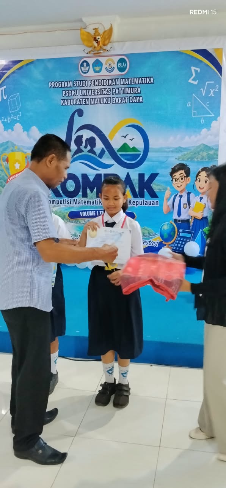

Dokumentasi Kegiatan KOMPAK
Berikut adalah beberapa momen kegiatan Kompetisi Matematika Pelajar Kepulauan (KOMPAK) Volume 1 Tahun 2026.

Foto Bersama Pemenang Medali Perak
Dokumentasi bersama para peserta yang berhasil meraih penghargaan Medali Perak dalam KOMPAK Volume 1.

Penyerahan Hadiah Medali Emas
Momen penyerahan hadiah kepada peserta yang berhasil meraih Medali Emas dalam kompetisi KOMPAK Volume 1.

Penyerahan Piala Bergilir
Penyerahan piala bergilir kepada perwakilan guru SMP Negeri Tiakur sebagai bentuk penghargaan dalam kegiatan KOMPAK Volume 1.
Narasumber Kegiatan KOMPAK
Mengenal lebih dekat pandangan dan pengalaman narasumber mengenai pelaksanaan Kompetisi Matematika Pelajar Kepulauan (KOMPAK) Volume 1.

Narasumber KOMPAK Volume 1
John Nandito Lekitoo, S.Pd., M.Pd.
Narasumber Kegiatan KOMPAK Volume 1
Profil Narasumber
Pak John Nandito Lekitoo, S.Pd., M.Pd.
merupakan narasumber dalam kegiatan Kompetisi
Matematika Pelajar Kepulauan (KOMPAK) Volume 1
yang diselenggarakan oleh Program Studi
Pendidikan Matematika PSDKU Universitas
Pattimura Kabupaten Maluku Barat Daya.
Kenali lebih dekat Program Studi Pendidikan Matematika
PSDKU Universitas Pattimura Kabupaten Maluku Barat Daya.
Dapatkan informasi mengenai program studi, kegiatan,
serta berbagai informasi akademik lainnya melalui website resmi.
Ikuti berbagai informasi, kegiatan, dokumentasi,
dan aktivitas menarik Program Studi Pendidikan
Matematika PSDKU Universitas Pattimura melalui
media sosial resmi kami.
Program Studi Pendidikan Matematika
Terhubung Bersama Kami!